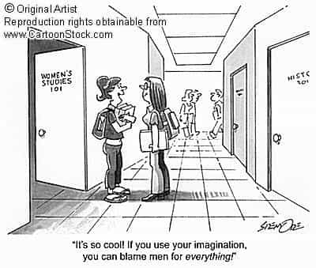
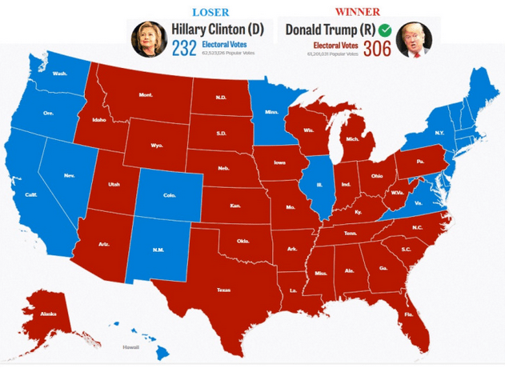
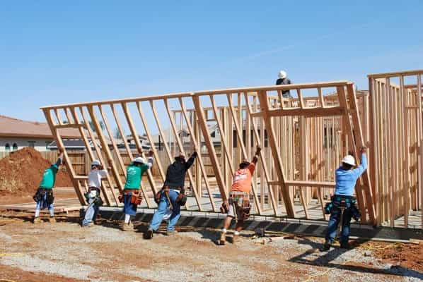

Previously: America Is Headed Towards A Civil War
The coming U.S. Civil War will not have the same outcome as the U.S. Civil War in the 19th Century. As society breaks down, other parts of our economy and civilization break down. Businesses will cease to operate. General services will become unavailable, and confidence in government is destroyed. The legal framework is being destroyed because justice is denied because of ideological lies. When the legal framework is destroyed, the entitlement among the population mindset will lead to murder, rape, destruction of property, starvation for some, and cannibalism for others.
There is no civilization without law and order. A barbaric society is a society with little or no law and order. When Europeans came to the Americas, they brought civilization, i.e. law and order, with them. While there were atrocities committed, the overall effect of European influence was to civilize, to bring law and order, to the peoples in the Americas.
One of the signs of barbarity, or the lack of law and order, is the systematic killing of babies and children (this includes unborn babies). Other signs of barbarity are the lack of children born in the bulk of a nation’s marriages and the decline of marriage.

A New Civil War Will Not Have the Same Outcome
The coming civil war will not have the same outcome of the U.S. Civil War of the 19th Century. In the 19th Century, the U.S. had a more solid and cohesive ideological, social, political, and economic fabric. The people of 19th Century America wanted to preserve the U.S. Constitution. The federal government survived the 19th century civil war. The deep state did not exist on the scale it does now; nor were there so many individual factions within U.S. borders at the time with the intent of reshaping America.
The 19th Century U.S. was more patriarchal. The decline of the patriarchal influence in the 20th century with the rise and elevation of the matriarchal over the patriarchal through feminism, anti-natalism (anti-children) has created a society that lacks foundational social cohesion because the base unit of civilization, the family, has been destroyed. The rise of the matriarchal has created feminized men and angry women.
Many forces within the U.S. do not want to preserve the U.S. Constitution and its guaranteed liberties. An example is the recent anonymous op-ed published in the New York Times. The author, claiming to be “resistance” from within the Trump Administration, declares President Trump “anti-democratic”. The irony of this op-ed is the author makes the accusation “while boasting of membership in an unelected cabal that covertly imposes their own ideology with zero democratic accountability, mandate or transparency.”
The deep state certainly exists, I know people the deep state is stealing from, and the deep state has stolen from me, but consider the possibility that this specific author may be a fabrication to create further division among the people, sow division and trouble in the Trump Administration, and further destroy confidence in the electoral process.

Trump’s election to the U.S. Presidency shows that many U.S. Citizens are not on board with the progressive agenda. If the federal government cannot be changed through legal channels, then the elites and the factions they control will seek to destroy the federal government through division and the deep state and attempt to put a new government in place.
Destroying confidence in the U.S. Constitution destroys the effectiveness of government and the rule of law. Justice is denied to a person based upon lack of money, lack of access to inner circles, lack of “protected class” status, or perceived privilege. Without law society deteriorates to tyranny and mob rule. Without confidence in the U.S. Government, the government is effectively destroyed and will be replaced by factions that will struggle for control. The deliberate creation of more divisions makes it harder for the founding principles of the U.S. to survive. The U.S. Constitution stands in the way of the New World Order.
The U.S. will eventually divide into multiple factions, each claiming legitimate government, but without the liberties of the U.S. Constitution. The U.S. will have no central government. The factions may form temporary alliances but some will seek to dominate all others and impose a new government, a reformed government, upon others. There will be those individuals and areas that will continue to stand for the U.S. Constitution and the rule of law.
Today several nations would take advantage of inner turmoil in the United States. Nations such as China, North Korea, Russia, and others would most certainly take military action and invade U.S. territories, Alaska, and potentially the mainland. Most people are so oblivious that they do not potentially see the influence of these nations even now. Undoubtedly, some of these factions will be destroyed or subjugate by invading nations.
What Will Be Our Response?
Each of us as individuals has several pertinent choices to make. The preservation of our liberties will come from honorable men because typically are the ones that fight for liberty. Preservation of liberty does not come without bloodshed. ROK has articles on survival and why survival skills are important. Most people have not considered the possibility of times without gas, electricity, running clean water, or sewer treatment.
As confidence in the U.S. Federal Government declines and justice declines because of the deep state, mainstream media, and progressivism, people, already divided against each other, will form tribes consisting of family, friends, and others with similar ideas. You are probably already seeing these tribes form in a loose manner. What immediate skills and trades facilitate survival? Skills such as farming, gardening, agriculture, and other trade skills will be of value because these skills can be used to barter or used to sustain oneself and others.
The burden will fall upon masculine men, as it always does in times of war. People will revert to the most basic survival instincts. The soy boys will be busy hiding with the women in their basements or agreeing with whomever has the perceived power before proceeding to murder, rape, and loot those that disagree with them. The larger cities and the inner cities will be more lawless, chaotic, and disorderly. Weather conditions will also affect how people behave. Some people will gladly forsake liberty for food, clean water, or warmth. Some people will sell their children for food, clean water, or warmth or eat their own children.
A sound mind, which includes sound thinking, reasoning, and emotional control, are critical in survival situations. Survival chances increase when working with other people of the same mind. Live where you desire but constantly be aware of your surroundings. Create a network of family, friends, and kindred to increase your support circle will increase chances of immediate survival and the survival of others. Gather around yourself people that are like-minded, with trade skills, people that can think, reason, and are not easily persuaded by the weak-minded and emotional. Catering to the weak drags other people down to the lowest level physically, socially, intellectually, emotionally, and spiritually.

What Will Be Rebuilt?
Civilizations will rebuild, but what will be rebuilt? Most of the time, people typically recreate the society they know unless they are already thinking about things they would change. To rebuild something better we must know what to keep and what to eliminate. We must know the mistakes of the past to avoid repeating those mistakes.
The founding principles, upon which the U.S. was built (the U.S. Constitution itself), will remain. Great care must be taken on what is built upon that foundation. Only patriarchy creates civilization. Societal and government change will come.
There are pertinent questions that will need answering, such as: Should women retain the right to vote? (Women did not have the right to vote prior to the 19th amendment to the U.S. Constitution.) Should traditional marriage be the standard and gay marriage eliminated? Do we really want the society we have now? A society where men are marginalized? A society where white people are demonized and minorities are mentally enslaved by progressive victimhood? Do we want to continue to be oppressed by children and ruled over by women?
I have pondered for many years what would be rebuilt and how to rebuild after the current civilization falls. Patriarchy must assume its rightful place in society. Giving women the right to vote, the sexual revolution of the 1960s, the legalization and acceptance of abortion and the rise of no-fault divorce are pushing our civilization toward destruction.
Undoubtedly, things will be hard. Many of the immediate conveniences our civilization has access to will be gone or reduced. Patriarchy will rebuild civilization. Men will rebuild. Let us rebuild a civilization that will not repeat the mistakes of the past.
Read More: How A German Historian Predicted The Decline Of Western Civilization 100 Years Ago